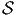

![eμ[e ] = δμ
ν ν](source20x.png)
Avant de passer au cas des variétés, il convient d’effectuer quelques rappels d’algèbre linéaire puisque le passage du cas vectoriel au cas des variétés s’effectue essentiellement en remplaçant un espace vectoriel unique par une famille d’espaces vectoriels “de même nature”, paramètrisée par les points de la variété.
Soit E un espace vectoriel de dimension finie n sur un corps K. On note E* son dual, c’est à dire l’ensemble des formes K-linéaires sur E (applications linéaires sur E à valeurs dans le corps de base, qu’on suppose commutatif). En terme de composantes, soit {eμ} une base de E, et {eμ} la base duale correspondante de E*, on a
L’espace vectoriel E de référence étant choisi, on écrira (comme le font toujours les physiciens) les vecteurs de base avec des “indices en bas” et les composantes avec des “indices en haut”. Bien entendu, la convention est opposée pour ce qui concerne l’espace vectoriel dual. Par ailleurs nous adoptons également la “convention d’Einstein”, c’est à dire que nous effectuons toujours une sommation (le signe somme étant sous-entendu) sur les indices répétés, lorsque l’un des indices est en position haute et l’autre en position basse. Nous avons déjà utilisé cette convention dans les sous-sections précédentes. Cette convention allège considérablement l’écriture des formules.
Nous n’adopterons pas, dans cet ouvrage, la notation dyadique chère à Dirac utilisant des bra et des ket car elle est peu usuelle en géométrie mais il est peut-être utile d’y consacrer quelques lignes. Avec cette notation, les éléments d’un certain espace vectoriel E choisi une fois pour toutes sont notés avec des “kets”, par exemple |v⟩ et les éléments du dual avec des “bras”, par exemple ⟨σ|. L’évaluation d’une forme sur un vecteur se note ainsi naturellement sous forme de “bracket” ⟨σ|v⟩. La relation précédente caractérisant la dualité entre une base de E et une base de E* s’écrira donc

Par contre, la quantité |eν⟩⟨eμ| désigne une application linéaire de E dans E puisque |eν⟩⟨eμ|e ρ⟩ = |eν⟩δρμ = |e ρ⟩. Ainsi, en prenant |v⟩ = vρ|e ρ⟩, on obtient |eν⟩⟨eμ|v⟩ = vμ|e ν⟩. Pour les mêmes raisons, l’écriture |v⟩⟨σ| désigne un opérateur (alors que ⟨σ|v⟩ désigne un nombre).
L’identification des vecteurs de E avec des applications de K dans E (à v ∈ E on associe l’application λ ∈ K → λv ∈ E) permet de bien comprendre cette dualité et l’intérêt de la notation dyadique.
Si on se souvient “qui est qui”, et si on fait attention à l’ordre des termes, on peut simplifier les notations à l’extrême et ne noter ni les produits tensoriels, ni les symboles ⟨| ou |⟩. On écrira ainsi parfois de façon un peu provocante les éléments de E sous la forme

L’ordre adopté ci-dessus (le fait d’écrire les composantes —qui sont pourtant des nombres !— à droite des vecteurs, etc) est particulièrement adapté aux généralisations non commutatives de la géométrie différentielle – cela vient du fait qu’en Occident, nous écrivons de gauche à droite !– mais rappelons nous que, bien entendu, en géométrie ordinaire “commutative” (celle qui nous intéresse ici), on peut toujours écrire v = eμvμ = vμe μ. Un dernier mot de mise en garde : lorsqu’on veut insister sur le fait que le vecteur eμ désigne une dérivation ∂μ, il est préférable – pour ne pas se tromper ! – d’écrire les composantes du côté gauche. Il en va de même en géométrie non commutative où champs de vecteurs et dérivations d’algèbre sont de toute façon des concepts différents puisque les premiers forment un module sur l’algèbre associative des “fonctions” alors que les dérivations ne forment un module que sur le centre de cette algèbre. Aucune ambiguïté n’est donc possible dans ce cadre plus général.
On note ⊗ E l’algèbre tensorielle sur E c’est à dire la somme directe ⊕p=0∞E⊗p où E⊗p désigne la puissance tensorielle d’ordre p de E, c’est à dire encore l’ensemble des applications multilinéaires d’ordre p sur E*. Soit T ∈ E⊗p alors on peut écrire
Bien entendu, nous pourrons considérer des tenseurs p-fois contravariants et q-fois covariants (éléments T de E⊗p ⊗ E*⊗q) et pour rester cohérents avec nos notations, nous écrirons les produits tensoriels des vecteurs de E à gauche de ceux de E*, c’est à dire


On notera Λk(E*) l’espace vectoriel des formes k-linéaires alternées sur E. Rappelons que T ∈ E*⊗k est alternée lorsque T(v 1,…,vi…,vj,…,vk) = 0 dès que vi = vj,i≠j. Il est équivalent de dire (si le corps de base n’est pas de caractéristique 2) que T est antisymétrique, c’est à dire que T(v1,…,vi…,vj,…,vk) = -T(v1,…,vj…,vi,…,vk). On dit aussi que T est une forme extérieure d’ordre k et que Λ(E*) est l’algèbre extérieure construite sur E*.
Le groupe symétrique k des substitutions sur k éléments opère de façon évidente sur les k-uplets de vecteurs. Soit s ∈k

Soient ω ∈ Λk(E*) et η ∈ Λp(E*). On définit Le produit extérieur ∧,

Propriétés :
∧ est associatif et distributif à droite et à gauche sur +
aω ∧ η = ω ∧ aη = a(ω ∧ η) avec a ∈ I R
ω ∧ η = (-1)(pk)η ∧ ω En particulier, si ω est impaire, ω ∧ ω = 0
Ces propriétés font de Λ(E*) = ⊕ k=0nΛk(E*) une algèbre super-commutative (une algèbre commutative Z Z2-graduée).
De plus, si ω ∈ Λk(E*), η ∈ Λp(E*) et θ ∈ Λq(E*), alors

La présence des diverses factorielles dans les expressions ci-dessus, aussi bien dans la définition de Alt que dans celle du produit extérieur, disparaît dans bien des cas ; par exemple, le lecteur pourra se convaincre que si {θμ} désigne une base de 1-formes, les définitions précédentes conduisent aux expressions suivantes :


Il faut signaler ici qu’il existe une autre définition du produit extérieur où les membres de droite des expressions précédentes sont respectivement multipliés par 1∕2! et 1∕3! La définition adoptée ici est telle que si {eμ} désigne une base de l’espace vectoriel considéré et {θμ} la base duale correspondante, nous avons

Désignons par {θμ} μ∈{1,2…n} une base de E*. Considérons un monôme tel que θμ1 ∧ θμ2 ∧… ∧ θμk. Par suite de l’antisymétrie du produit extérieur, il est clair qu’une telle expression est nulle dès qu’un vecteur de base est répété deux fois (c’est une autre façon de dire qu’un tenseur complètement antisymétrique est nul dès que deux indices sont répétés). Par ailleurs, deux monômes de ce type qui ne diffèrent que par l’ordre des termes sont soit égaux, soit opposés. On peut donc supposer que les indices sont ordonnés de la façon suivante : 1 ≤ μ1 < μ2 < … < μk ≤ n. Enfin, il est facile de voir que toute forme extérieure d’ordre k, c’est à dire tout élément de Λk(E*) peut se décomposer sur des monômes de ce type. La dimension de l’espace vectoriel Λk(E*) est donc ( kn). Bien entendu, lorsque k > n, toute forme extérieure est nulle (deux indices sont alors automatiquement répétés !). La dimension de l’algèbre extérieure est donc Σk=0n kn = 2n. Pour conclure ce paragraphe, citons sans démonstration (mais elle est facile) le petit résultat bien utile suivant : Les formes linéaires ω1,ω2,…,ωp sont indépendantes si et seulement si leur produit extérieur ω1 ∧ ω2 ∧… ∧ ωp est non nul.
Une forme extérieure ω d’ordre k peut s’écrire de trois façons possibles. Tout d’abord, on peut la considérer comme un tenseur k fois covariant, et , à ce titre, on peut la décomposer (existence et unicité) sur la base des tenseurs d’ordre k. On peut donc écrire

La troisième écriture — de loin, la plus utilisée — est celle où on décompose la forme ω (toujours la même) sur la famille génératrice des formes extérieures θμ1 ∧θμ1 ∧…∧θμk mais sans ordonner les indices ! Bien entendu, pour un ensemble d’indices donnés (pour un ensemble de vecteurs de base donné), k! des monômes précédents vont être égaux (ou opposés) et il faudra “corriger” le développement de ω en rajoutant un 1∕k! devant l’expression. Ainsi donc,
Soit E un espace vectoriel et Λ(E*) l’algèbre extérieure sur son dual. Nous avons défini précédemment le produit extérieur, qui est une loi de composition interne à l’algèbre extérieure. Au contraire, l’opération que nous allons maintenant définir, le produit intérieur n’est pas un produit au sens usuel du terme, en effet, il associe, à la donnée d’une forme extérieure ω d’ordre k (un élément de Λk(E*)) et d’un vecteur v (un élément de E) une autre forme différentielle, mais maintenant d’ordre k - 1, c’est à dire un élément de Λk-1(E*). Cette nouvelle forme est simplement obtenue en “contractant” ω et v, plus précisément, en écrivant

Il résulte de l’antisymétrie des formes extérieures que deux opérations iv et iw anticommutent, en particulier, le carré de l’opération iv est nul :iviwω = -iwivω et ivivω = 0, ce qu’on écrit simplement


Soit f~ un endomorphisme de l’espace vectoriel E et soit f~ l’endomorphisme dual (aussi appelé transposé). Rappelons ce que cela signifie : f~ est une application linéaire de E dans E et f~ est une application linéaire du dual E* dans lui-même définie comme suit : soient v ∈ E et θ ∈ E*, alors f~(θ)(v) = θ(f ~(v)), c’est à dire encore f~(θ) = θof ~. On peut alors vérifier aisément que

 et f* = f~ =
et f* = f~ =  . Notons pour finir que la notation f
~ est en
général inutile dans le cas des espaces vectoriels puisqu’on peut écrire tout
simplement f = f~, mais dans le cas des variétés, nous verrons que f≠f~≠f~ !
. Notons pour finir que la notation f
~ est en
général inutile dans le cas des espaces vectoriels puisqu’on peut écrire tout
simplement f = f~, mais dans le cas des variétés, nous verrons que f≠f~≠f~ !